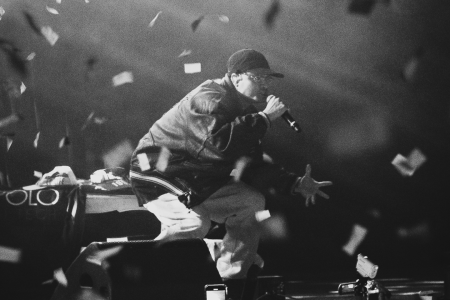

7 de noviembre de 2026
Santiago
Concierto en vivo
Recinto y entradas por anunciar.
El rap de Jonas Sanche sobre el escenario. Encuentra aquí sus próximas presentaciones y la información de cada encuentro.
7 de noviembre de 2026
Concierto en vivo
Recinto y entradas por anunciar.
21 de noviembre de 2026
Concierto en vivo
Recinto y entradas por anunciar.
5 de diciembre de 2026
Concierto en vivo
Recinto y entradas por anunciar.

Presentaciones grabadas para disfrutar de su música en directo.
CASAPARLANTE · 2025 · Sesión en vivo
Jonas y Soulnastyy llevan su proyecto conjunto a CASAPARLANTE, en una sesión que presenta la música de BABY NASTY en directo.
Ver sesión en YouTubeNTV · 2023 · Tocata en televisión
Una presentación en el programa cultural Hora 25 de NTV, donde Jonas comparte su rap en una tocata para televisión.
Ver tocata en TVN